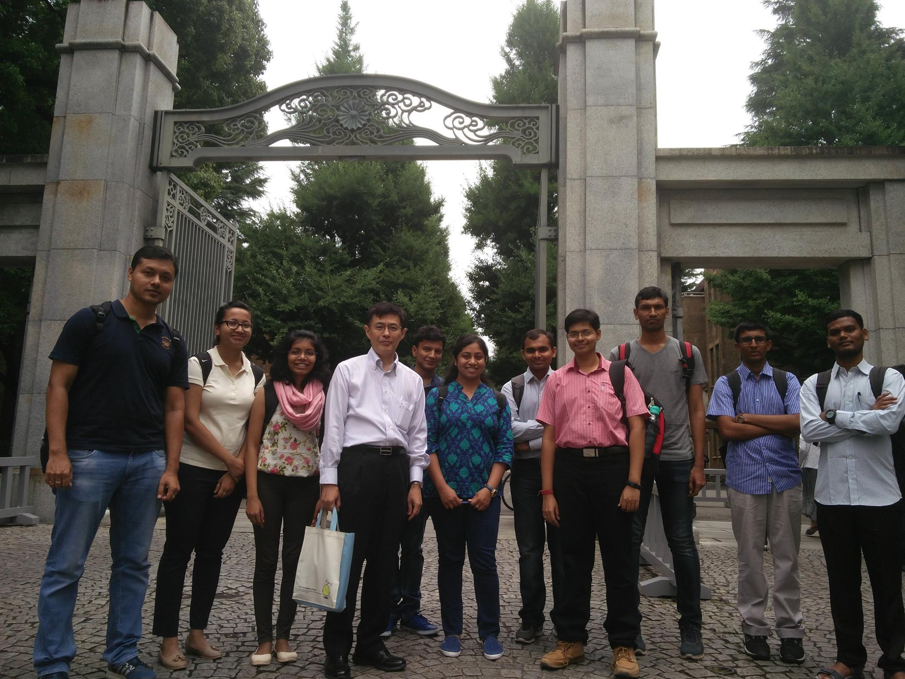
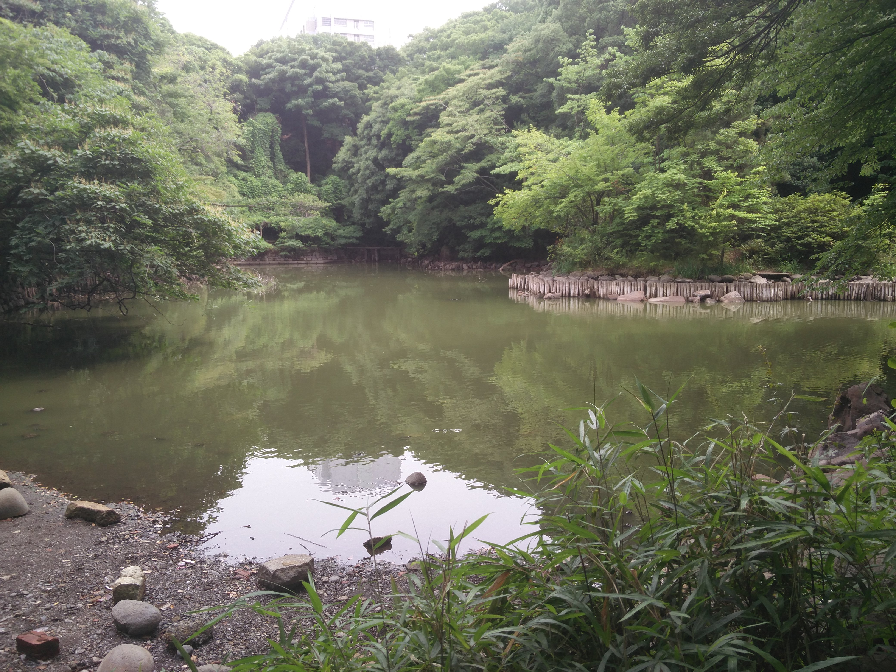
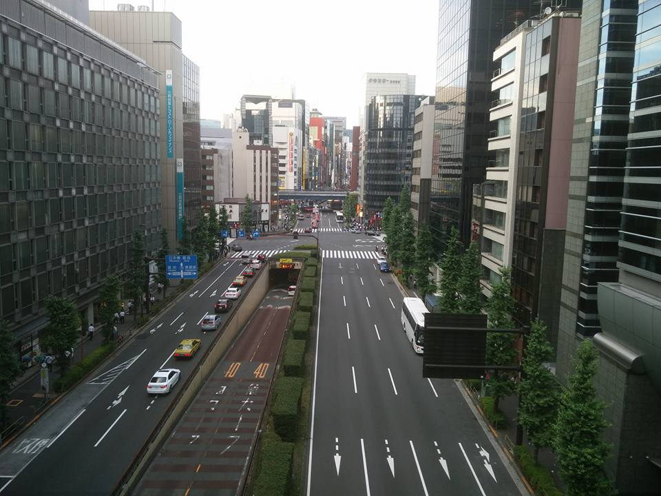
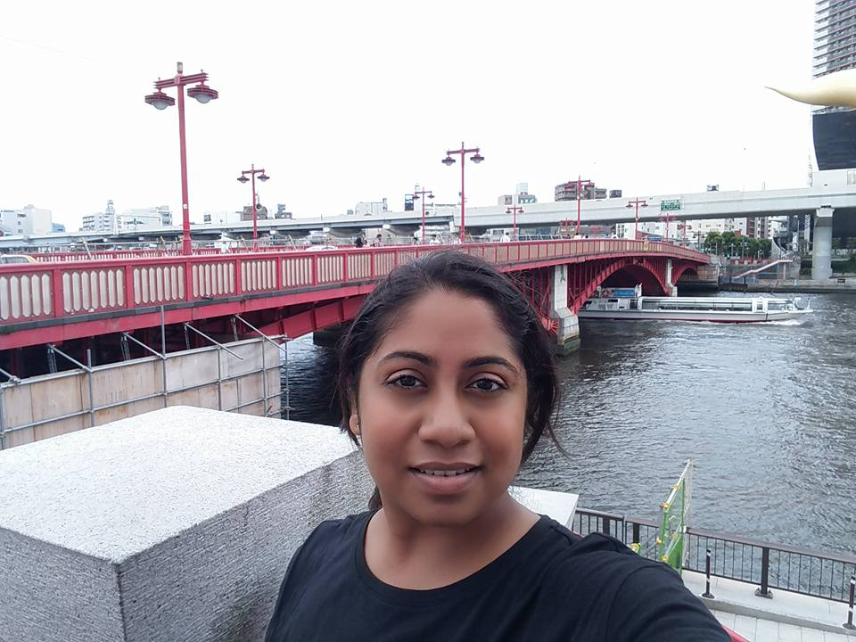
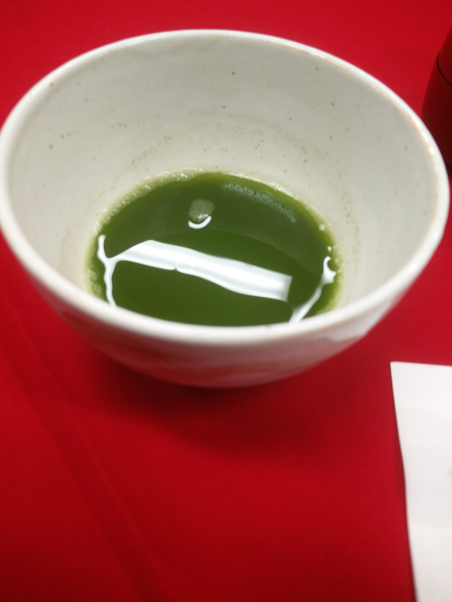
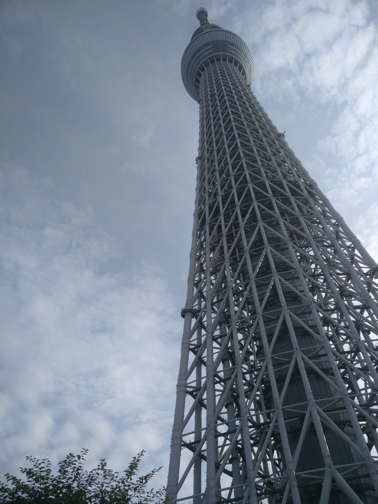
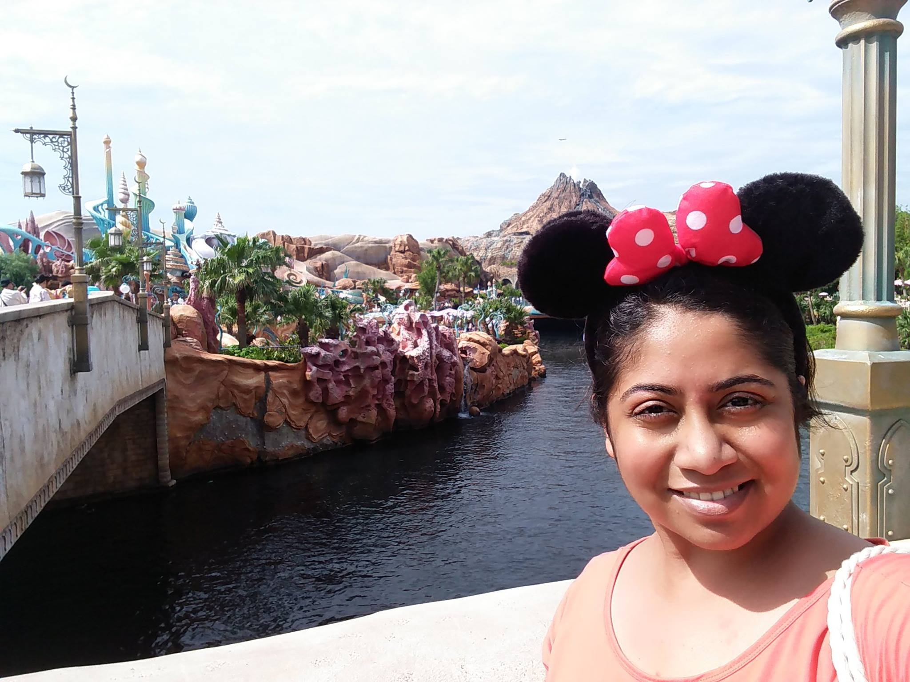
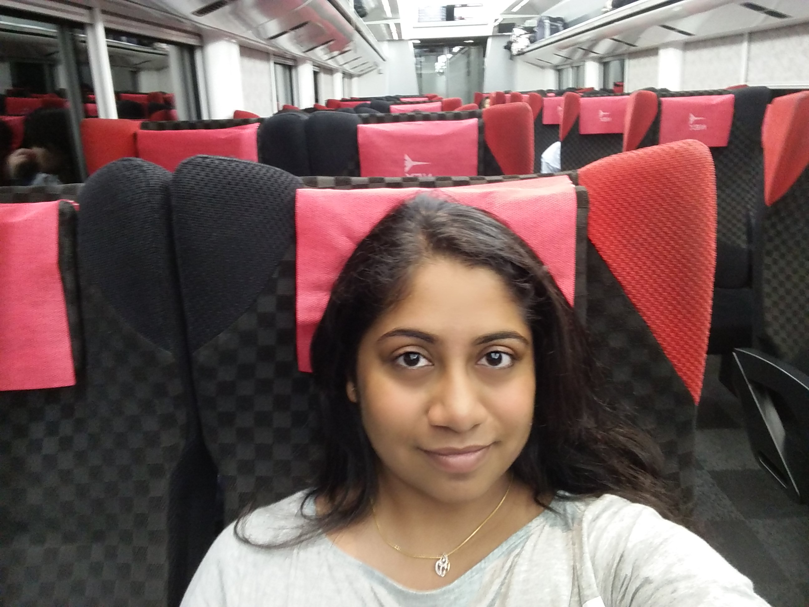

I feel extremely priveledged to have gotten this oppurtunity to visit the University of Tokyo, Japan. The trip helped me build the utmost respect for the Japanese culture and the people who are very warm and very accommodating.
We were a group of 10 Indian students from various IITs who were hosted by various labs at UTokyo corresponding to out research areas. I was hosted at the
Kobayashi lab where I learnt about their work in higher order model checking.
About the work @Kobayashi lab
The work culture at the lab is very professional yet very friendly and accommodating. The lab has some very focused and very motivated group of researchers who welcomed me really well. The lab's work is mostly focused on theoretical foundations for software and their applications for model checking and program verification. You can read about the lab
here.
Stay in Japan
Tokyo is a very densely populated city but also very advanced and sorted. So to manage the large crowd they have rules and accepted practices which are easy to understand and follow. It is suggested that before the visit one reads about their ways. The city is extremely well connected by public transport which are punctual and comfortable. The city is generally costly and there are is no currency exchange from INR to JPY there.
Food and Language
The food is sooo good. I suggest you try the dishes popular their instead of looking for food that we find back home. All eating joints are very hygenic and the staff is very courteous. However, if you are a vegetarian you might have a very hard time in Tokyo, the one respite is that you can easily find Indian restaurants there, where you can ask for all vegetarian food even if it's not the menu.
Here are some of the places I covered there.
Click on the images to make them bigger

Our exchange program group with Prof. Reiji Suda

Lake inside University of Tokyo, Hongo

A typical street in Tokyo

Tokyo has some really lovely gardens.

The clean and beautiful Sumida river
Enoshima Island
near Tokyo
The famous Buddha statue, Kotoku-in, Kamakura
Akamon ramen, a speciality of University cafe

Macha, Japanese traditional tea

The Tokyo
Skytree Tower
world-record roller coasters. A must try.
Tokyo Disney sea. Beyond awesome.

Well, if you go to Disney Land you get mickey ears

Such comfortable trains in Japan
I would like to thank everybody associated with Sakura Science Program and JST for inviting us and providing us with an experience that would definitely stay with me always